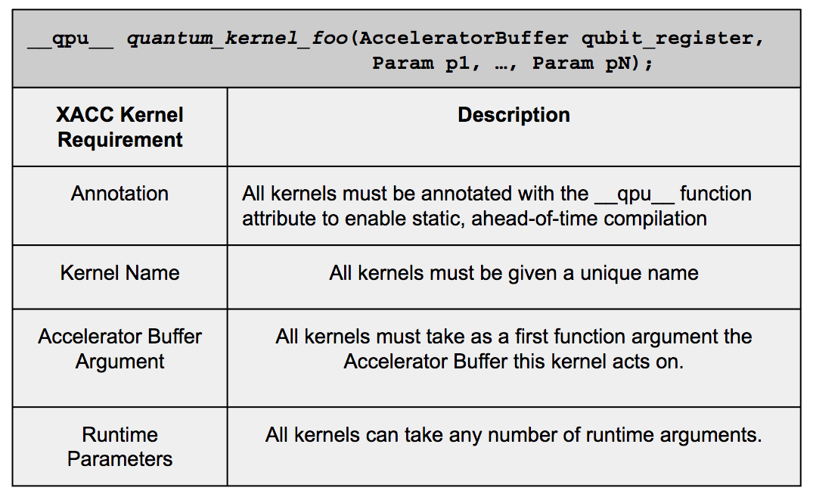

XACC API¶
Kernels¶
XACC requires that clients express code intended for quantum acceleration in a manner similar to CUDA or OpenCL for GPU acceleration: code must be expressed as stand-alone emph{quantum kernels}. The figure above provides a description of the requirements for a kernel to be valid in XACC. At its core, an XACC quantum kernel is represented by a function in C++. This function must take as its first argument the AcceleratorBuffer instance representing the qubit register that this kernel operates on. A quantum kernel, therefore, is a programmatic representation of the unitary operations applied to a quantum register of qubits, e.g., represented by a quantum circuit, or described as a quantum annealing process. Furthermore, in XACC, quantum kernels do not specify a return type; all information about the results of a quantum kernel’s operation are gathered from the AcceleratorBuffer’s ensemble of qubit measurements. Quantum kernels in XACC are differentiated from conventional library calls using the qpu keyword.
The function body of an XACC quantum kernel may be expressed in any available quantum programming language. An available quantum programming language is one such that the XACC implementation provides a valid Compiler implementation for the language. Finally, quantum kernels may take any number of kernel arguments that drive the overall execution of the quantum code. This enables parameterized quantum circuits that may be evaluated at runtime.
Intermediate Representation¶
In order to promote interoperability and programmability across the wide range of available QPU types and quantum programming languages (embedded or stand-alone), there must be some common, standard low-level program representation that is simple to understand and manipulate. An example of this in the conventional computing world is the LLVM - a compiler infrastructure that maps a programming language to an intermediate representation that can be used to perform hardware dependent and independent optimizations, and generate native, hardware-specific executable code. It is this representation that enables efficient language and hardware interoperability. Similarly for quantum computing, with the variety of available QPU types (superconducting, ion trap, adiabatic, etc.) and quantum programming languages (Scaffold, QCL, Quipper, Quil, etc.) there is a strong need for some standard low-level intermediate representation that serves as the glue between languages and hardware. A standard in this regard would enable a wide range of quantum programming tools, and provide early users the benefit of programming their domain-specific algorithms in a manner that best suits their research and application. It will enable the execution of those programmed algorithms on a number of differing hardware types.

XACC defines a novel intermediate representation (IR) infrastructure that promotes the overall integration of existing programming techniques and hardware realizations. The IR specification provides four main forms for use by clients: (1) an in-memory representation and API, (2) an on-disk, persisted representation, (3) human-readable quantum assembly representation, and (4) a graph representation (for example, a quantum circuit or tensor network for gate model computing, and Ising Hamiltonian graph for quantum annealing). This specification enables efficient analysis and isomorphic transformation of quantum kernel code, and provides a common representation for executing code written in any quantum language for any available quantum hardware, given constraints on the model of quantum computing being leveraged. XACC does not enable execution across quantum computing models.
The specification for the IR infrastructure interfaces is shown in the figure below using the Unified Modeling Language (UML). The foundation of the XACC IR specification is the Instruction interface, which abstracts the concept of an executable instruction for an attached Accelerator. Instructions have a unique name and reference to the accelerator bits that they operate on. Instructions can operate on one or many accelerator bits, and can be in an enabled or disabled state to aid in the definition of conditional branching. Instructions can also be parameterized. Each Instruction may optionally keep track of one or many InstructionParameters, which are essentially a variant data structure that can be of type float, double, int, string, or complex.
XACC defines a Function interface to express kernels as compositions of instructions. The Function interface is a derivation of the Instruction interface that, itself contains Instructions. The Instruction/Function combination models the familiar composite design pattern. In XACC, kernels to be executed on an attached accelerator are modeled as an n-ary tree with Function references as nodes and Instruction references a leaves.
XACC defines a container for Functions as the XACC IR interface. This interface provides an abstraction to model a list of compiled Functions, with the ability to map those Functions to both an assembly-like, human-readable string, and a graph data structure. For the case of gate model quantum acceleration, the graph models the quantum circuit and provides a convenient data structure for isomorphic transformations and analysis. For quantum annealing, the graph structure can model the Ising Hamiltonian parameters that form the machine-level instructions for the quantum computation.
The structures just described give us three of the four forms that the XACC’s intermediate representation provides - the in-memory data structure representation and API, the human-readable assembly representation, and the graph representation. To provide an on-disk representation, the IR interface exposes load and persist methods that take a file path to read in, and to write to, respectively. In this way, IR instances that are generated from a given set of kernels can be persisted and reused, enabling faster just-in-time compilation.
Due to the tree-like nature of the XACC IR infrastructure, where each node can be one of many different types (subclasses of Function and Instruction, for example Hadamard, CNOT, etc. for gate model computing), there is a need for an extensible mechanism for walking this tree and performing subclass-specific tasks on each node. XACC defines an InstructionVisitor for this purpose, which models the familiar visitor pattern. To implement this design pattern, InstructionVisitor provides a visit method for each exposed Instruction sub-type, and each Instruction implements an accept method that takes as input an InstructionVisitor instance. Since each accept method has type-specific information about the Instruction, the correct visit method is invoked on the InstructionVisitor, and therefore, type-specific routines are run for the given Instruction.
The XACC IR interfaces provide a unique way to describe quantum algorithms through an in-memory, object model representation. To build off this idea, XACC defines an AlgorithmGenerator interface, which enables the generation of XACC Function implementations in an extensible manner. This interface provides a generate method that can be implemented by subclasses, which takes as input the bits that the algorithm should operate on, and produces a Function representation of the algorithm. This provides a unique way to expose common quantum algorithmic primitives such as quantum Fourier transforms, phase estimation, etc., to XACC programmers. Specifically, this generator service can be leveraged at compile time to search for common algorithm subroutine invocations, and replace them with IR Function instances that can be executed by XACC Accelerators.
Compilers¶
To provide extensibility in quantum programming languages (QPL), XACC describes an interface for QPL compilers - simply called the Compiler interface. At its core, this interface provides a compilation method that subclasses implement to take quantum kernel source code as input and produce a valid instance of the XACC IR. Derived Compilers are free to perform quantum compilation in any way they see fit, as long as they return a valid IR instance. This compile mechanism can also be provided with information on the targeted accelerator at compile time. This enables hardware-specific details to be present at compile time and thus influence the way compilation is performed. For example, quantum compilation methods often require information about the hardware connectivity graph - XACC and its compiler mechanism ensures this type of hardware-specific information is available at compile time.

Compilers also provide a translate method to enable quantum language source-to-source translation. This method takes as input an IR Function instance to produce an equivalent source string in the Compiler’s quantum programming language. The overall workflow for XACC source-to-source translation relies on the flexibility of the XACC IR specification. A kernel source code can be compiled with its appropriate Compiler instance. The Function IR instance produced by that mechanism can then be passed to the translate method of the Compiler for the language being generated. The implementation of the translate method maps the IR Function Instructions to language-specific source code and returns it.
In addition to the Compiler interface, the concept of compilation in XACC also defines a Preprocessor interface. Preprocessors are to be executed before compilation, and take as input the source code to analyze and process, the compiler reference for the kernel language, and the accelerator being targeted for execution. Using this data, Preprocessors can perform operations on the kernel source string to produce a new kernel source string. All modifications made by the Preprocessor should be isomorphic in nature, i.e. the resultant kernel source code should, upon execution, should produce the same result as the provided kernel source code. An example of the Preprocessor’s utility would be searching kernel source code for certain key words describing a desired algorithm to be executed on a set of bits, and replacing that line of code with a source-code representation of the algorithm. A Preprocessor like this would alleviate tedious programming tasks for users.
IR Transformations¶
The native assembly generator component plays the important role of providing an extensible hook for modifications of the generated intermediate representation that make it amenable to execution on the desired quantum hardware. XACC defines an IRTransformation interface that provides a method for taking a valid IR instance and outputting a modified, optimized, or generally transformed isomorphic IR instance. Accelerator implementations can provide realizations of this interface that can be executed by the backend native assembly generator to ensure the compiled IR instance can be executed on the hardware. For example, a hardware implementation that does not provide a physical implementation of a given gate could expose an IRTransformation that searches for all instances of that gate instruction and replaces them with some other gate or set of gates that achieves the same functionality, thereby ensuring the new IR instance is isomorphic to the provided IR instance.
Accelerators¶
The inevitable near-term variability in quantum hardware designs and implementations forces any heterogeneous programming model for quantum acceleration within existing workflows to be extensible in the hardware types it interacts with. XACC is no exception to this, and therefore provides an interface for injecting custom accelerator instances. This Accelerator concept provides an extensible abstraction for the injection of current and future quantum accelerator hardware.
Accelerators provide an initialize mechanism for implementors to handle any start-up or loading procedures that need to happen before execution on the device. This, for example, can include creating remote connections to the Device CPU / Accelerator system, or retrieving qubit connectivity information to inform and affect kernel code compilation. Accelerators expose a mechanism for creating instances of AcceleratorBuffers, which provide clients of XACC with a handle on measurement results. Additionally, as seen in the previous section, Accelerator implementations can provide any necessary transformations on the compiled IR instances. These transformations will be run after compilation has taken place, but before execution begins.
par
Accelerators provide a method for exposing the bit connectivity of the hardware. For example, the D-Wave QPU has a very specific qubit connectivity structure, which plays a very important role in mapping programs onto the hardware. The getAcceleratorConnectivity method can be used by compilers to aid in the compilation or mapping of high-level problems onto the Accelerator.
Finally, Accelerators expose an execute method that takes as input the Accelerator Buffer to be operated on and the Function instance representing the quantum kernel to be executed. Realizations of this interface are responsible for leveraging these data structures to affect execution on their desired hardware or simulator. It is intended that Accelerator implementations leverage vendor-supplied APIs to perform this execution. All execute implementations are responsible for updating the Accelerator Buffer with measurement results.
Programs and Execution Workflow¶
The main entry-point for interaction with the XACC programming model and API is the concept of a Program. The XACC Program orchestrates the entire quantum code compilation process and provides users with an executable functor or lambda to affect the execution of the quantum code on the desired Accelerator. The figure below gives a high-level view of this workflow represented as a UML sequence diagram.

The execution workflow starts with a call to the XACC framework to get reference to the desired Accelerator. With that Accelerator, users can request an allocation of bits to operate on represented as an Accelerator Buffer instance. Then, to begin the compilation process of the quantum source code kernel, users instantiate an XACC Program. All Programs are instantiated with a reference to the desired Accelerator so that the compilation process may leverage hardware-specific information. Programs also take as input the source code to be compiled, an already constructed XACC IR instance, or a file(s) reference of a persisted XACC IR instance for fast loading at runtime. Once a Program is created, users can use the Program to compile the source code through a public build method. This method handles the creation of the appropriate language-specific Compiler, the execution of any desired Preprocessors, the actual compilation, and the execution of any required IR Transformations. The result is an IR instance that is stored by the Program. Once built, users can request a kernel by name, or get all compiled kernels as lambda or functor objects. These functors handle the interaction of the IR, Accelerator Buffer, and the Accelerator’s execution mechanism. This execution is kicked off by invoking the kernel functor (in C++ a call to the operator()(Args...) method). Execution occurs on the Accelerator, and measurement results are stored on the Accelerator Buffer, which the user has reference to. Therefore, once the execution is complete, the results are with the user and are ready for post-processing and use in the workflow.